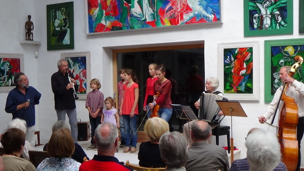

Besichtigungen und Führungen im März nach Vereinbarung.
Ab April wieder jeden Sonntag 15 Uhr Führung.
Öffnungszeiten: Samstag und Sonntag 10:00 - 18:00 Uhr Montag und Freitag 15:00 - 18:00 Uhr. Info an der Brücke beachten! Weitere Termine nach Vereinbarung.
Begegnung von Kunst und Religion
Aktuelles
